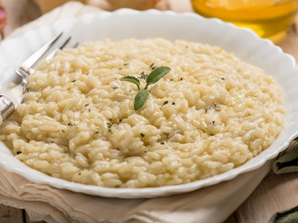

Rice Lombard

Rice Lombard is a very easy to make 15th century English dish.
Ingredients:
- 1 1/2 cups rice
- 3 cups broth
- 1/4 tsp. salt
- pinch saffron
- pinch cinnamon
- pinch sugar
Preparation:
- Put broth, salt, and saffron into a large saucepan and bring to a boil.
- Add rice, cover, and reduce heat.
- Cook for about 15 minutes, or until rice is tender.
- Sprinkle with sugar and cinnamon.
Main Page